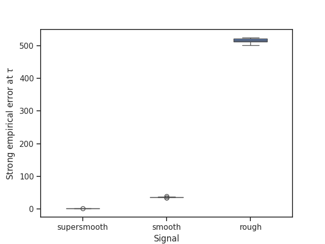
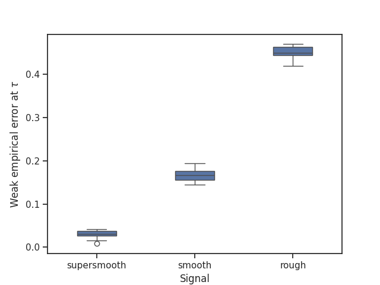

Note
Go to the end to download the full example code.
Simulation study for conjugate gradients#
We conduct in the following a simulation study illustrating the conjugate gradients algorithm.
import time
import numpy as np
import pandas as pd
from scipy.sparse import dia_matrix
import matplotlib.pyplot as plt
import seaborn as sns
import EarlyStopping as es
sns.set_theme(style="ticks")
np.random.seed(42)
Simulation Setting#
To make our results comparable, we use the same simulation setting as Blanchard et al. (2018) and Stankewitz (2020).
# Set parameters
sample_size = 10000
parameter_size = sample_size
max_iter = sample_size
noise_level = 0.01
critical_value = sample_size * (noise_level**2)
# Create diagonal design matrices
indices = np.arange(sample_size) + 1
design = dia_matrix(np.diag(1 / (np.sqrt(indices))))
# Create signals
signal_supersmooth = 5 * np.exp(-0.1 * indices)
signal_smooth = 5000 * np.abs(np.sin(0.01 * indices)) * indices ** (-1.6)
signal_rough = 250 * np.abs(np.sin(0.002 * indices)) * indices ** (-0.8)
We plot the SVD coefficients of the three signals.
plt.plot(indices, signal_supersmooth, label="supersmooth signal")
plt.plot(indices, signal_smooth, label="smooth signal")
plt.plot(indices, signal_rough, label="rough signal")
plt.ylabel("Signal")
plt.xlabel("Index")
plt.ylim([-0.05, 1.6])
plt.legend()
plt.show()
Monte Carlo Study#
We simulate NUMBER_RUNS realisations of the Gaussian sequence space model.
# Specify number of Monte Carlo runs
NUMBER_RUNS = 10
# Set computation threshold
computation_threshold = 0
# Create observations for the three different signals
noise = np.random.normal(0, noise_level, (sample_size, NUMBER_RUNS))
observation_supersmooth = noise + (design @ signal_supersmooth)[:, None]
observation_smooth = noise + (design @ signal_smooth)[:, None]
observation_rough = noise + (design @ signal_rough)[:, None]
We choose to interpolate linearly between the conjugate gradient estimates at integer iteration indices and create the models.
# Set interpolation boolean
interpolation_boolean = True
# Create models
models_supersmooth = [
es.ConjugateGradients(
design,
observation_supersmooth[:, i],
true_signal=signal_supersmooth,
true_noise_level=noise_level,
interpolation=interpolation_boolean,
computation_threshold=computation_threshold,
)
for i in range(NUMBER_RUNS)
]
models_smooth = [
es.ConjugateGradients(
design,
observation_smooth[:, i],
true_signal=signal_smooth,
true_noise_level=noise_level,
interpolation=interpolation_boolean,
computation_threshold=computation_threshold,
)
for i in range(NUMBER_RUNS)
]
models_rough = [
es.ConjugateGradients(
design,
observation_rough[:, i],
true_signal=signal_rough,
true_noise_level=noise_level,
interpolation=interpolation_boolean,
computation_threshold=computation_threshold,
)
for i in range(NUMBER_RUNS)
]
We calculate the early stopping index, the conjugate gradient estimate at the early stopping index and the squared residual norms along the whole iteration path (until max_iter) for the three signals.
for run in range(NUMBER_RUNS):
start_time = time.time()
models_supersmooth[run].gather_all(max_iter)
models_smooth[run].gather_all(max_iter)
models_rough[run].gather_all(max_iter)
end_time = time.time()
print(f"The {run+1}. Monte Carlo step took {end_time - start_time} seconds.")
print(f"Supersmooth early stopping index: {models_supersmooth[run].early_stopping_index}")
print(f"Smooth early stopping index: {models_smooth[run].early_stopping_index}")
print(f"Rough early stopping index: {models_rough[run].early_stopping_index}")
The 1. Monte Carlo step took 3.536295175552368 seconds.
Supersmooth early stopping index: 6.699201372747395
Smooth early stopping index: 12.030770438414743
Rough early stopping index: 14.356422184489908
The 2. Monte Carlo step took 3.5081934928894043 seconds.
Supersmooth early stopping index: 4.6772041505151
Smooth early stopping index: 11.352301321295782
Rough early stopping index: 14.112992119805885
The 3. Monte Carlo step took 3.557060718536377 seconds.
Supersmooth early stopping index: 5.182484897988193
Smooth early stopping index: 11.493143170026945
Rough early stopping index: 14.145252765004145
The 4. Monte Carlo step took 3.540303945541382 seconds.
Supersmooth early stopping index: 4.7020023660260835
Smooth early stopping index: 11.338486388441149
Rough early stopping index: 14.070451599810442
The 5. Monte Carlo step took 3.5417559146881104 seconds.
Supersmooth early stopping index: 5.0144876404376815
Smooth early stopping index: 11.42263886111361
Rough early stopping index: 14.137469585887875
The 6. Monte Carlo step took 3.5630619525909424 seconds.
Supersmooth early stopping index: 5.111008343034806
Smooth early stopping index: 11.441639664118473
Rough early stopping index: 14.207569614688483
The 7. Monte Carlo step took 3.5113308429718018 seconds.
Supersmooth early stopping index: 5.537541704635732
Smooth early stopping index: 11.596816934533715
Rough early stopping index: 14.264939437970401
The 8. Monte Carlo step took 3.5768826007843018 seconds.
Supersmooth early stopping index: 5.130345019762272
Smooth early stopping index: 11.467838357245501
Rough early stopping index: 14.178303331553893
The 9. Monte Carlo step took 3.561995267868042 seconds.
Supersmooth early stopping index: 4.919222354134391
Smooth early stopping index: 11.411767057802948
Rough early stopping index: 14.143589117108155
The 10. Monte Carlo step took 3.5425350666046143 seconds.
Supersmooth early stopping index: 4.686737679721317
Smooth early stopping index: 11.400921702173852
Rough early stopping index: 14.123870186474605
Plot of squared residual norms and empirical error terms#
We plot for the first Monte Carlo run the squared residual norms along the whole iteration path and the corresponding weak and strong empirical error terms, i.e. the empirical prediction and reconstruction errors, for the supersmooth signal. The critical value is denoted by \(\kappa\) and the early stopping index by \(\tau\). If we choose to interpolate, i.e. interpolation_boolean is set to true, we need to interpolate between the residual polynomials and therefore between the estimators.
# Set gridsize for the x-axis of the plots
GRIDSIZE = 0.01
# Calculate interpolated squared residual norms and interpolated strong and weak empirical errors for the first Monte Carlo run
if interpolation_boolean:
grid = np.arange(0, max_iter + GRIDSIZE, GRIDSIZE)
residuals_supersmooth = models_supersmooth[0].calculate_interpolated_residual(index=grid)
strong_empirical_errors_supersmooth = models_supersmooth[0].calculate_interpolated_strong_empirical_error(
index=grid
)
weak_empirical_errors_supersmooth = models_supersmooth[0].calculate_interpolated_weak_empirical_error(index=grid)
else:
grid = np.arange(0, max_iter + 1)
residuals_supersmooth = models_supersmooth[0].residuals
strong_empirical_errors_supersmooth = models_supersmooth[0].strong_empirical_errors
weak_empirical_errors_supersmooth = models_supersmooth[0].weak_empirical_errors
# Plot
plot_residuals_empirical_errors = plt.figure()
plt.plot(grid, residuals_supersmooth, label="squared residual norm", color="green")
plt.plot(grid, strong_empirical_errors_supersmooth, label="strong empirical error", color="blue")
plt.plot(grid, weak_empirical_errors_supersmooth, label="weak empirical error", color="orange")
plt.axvline(x=models_supersmooth[0].early_stopping_index, color="grey", linestyle="--")
plt.axhline(y=models_supersmooth[0].critical_value, color="grey", linestyle="--")
plt.xlim([0, 14])
plt.ylim([0, 2])
plt.xlabel("Iteration index")
plt.xticks(list(plt.xticks()[0]) + [models_supersmooth[0].early_stopping_index], list(plt.xticks()[1]) + ["$\\tau$"])
plt.yticks(
list(plt.yticks()[0]) + [models_supersmooth[0].critical_value], list(plt.yticks()[1]) + ["$\\kappa = D \\delta^2$"]
)
plt.legend()
plt.grid()
plt.show()
Strong and weak empirical oracles#
We add the strong and weak empirical oracles to the plot.
# Calculate the empirical oracles
empirical_oracles_supersmooth = models_supersmooth[0].calculate_empirical_oracles(max_iter)
# Update the plot
plt.figure(plot_residuals_empirical_errors)
plt.axvline(
x=empirical_oracles_supersmooth[0],
color="grey",
linestyle="--",
)
plt.xticks(
list(plt.xticks()[0]) + [empirical_oracles_supersmooth[0]],
list(plt.xticks()[1]) + ["$\\tau_{emp,\\mathfrak{s}}$"],
)
plt.axvline(
x=empirical_oracles_supersmooth[2],
color="grey",
linestyle="--",
)
plt.xticks(
list(plt.xticks()[0]) + [empirical_oracles_supersmooth[2]],
list(plt.xticks()[1]) + ["$\\tau_{emp,\\mathfrak{w}}$"],
)
plt.xlim([2, 8])
plt.show()
Boxplots of the strong and weak empirical losses#
We make boxplots comparing the performance of the conjugate gradient estimator at the early stopping index for the three different signals in terms of its strong and weak empirical error.
if interpolation_boolean:
strong_empirical_errors_supersmooth_Monte_Carlo = [
float(model.calculate_interpolated_strong_empirical_error(index=model.early_stopping_index).item())
for model in models_supersmooth
]
strong_empirical_errors_smooth_Monte_Carlo = [
float(model.calculate_interpolated_strong_empirical_error(index=model.early_stopping_index).item())
for model in models_smooth
]
strong_empirical_errors_rough_Monte_Carlo = [
float(model.calculate_interpolated_strong_empirical_error(index=model.early_stopping_index).item())
for model in models_rough
]
weak_empirical_errors_supersmooth_Monte_Carlo = [
float(model.calculate_interpolated_weak_empirical_error(index=model.early_stopping_index).item())
for model in models_supersmooth
]
weak_empirical_errors_smooth_Monte_Carlo = [
float(model.calculate_interpolated_weak_empirical_error(index=model.early_stopping_index).item())
for model in models_smooth
]
weak_empirical_errors_rough_Monte_Carlo = [
float(model.calculate_interpolated_weak_empirical_error(index=model.early_stopping_index).item())
for model in models_rough
]
else:
strong_empirical_errors_supersmooth_Monte_Carlo = [
models_supersmooth[i].strong_empirical_errors[models_supersmooth[i].early_stopping_index]
for i in range(NUMBER_RUNS)
]
strong_empirical_errors_smooth_Monte_Carlo = [
models_smooth[i].strong_empirical_errors[models_smooth[i].early_stopping_index] for i in range(NUMBER_RUNS)
]
strong_empirical_errors_rough_Monte_Carlo = [
models_rough[i].strong_empirical_errors[models_rough[i].early_stopping_index] for i in range(NUMBER_RUNS)
]
weak_empirical_errors_supersmooth_Monte_Carlo = [
models_supersmooth[i].weak_empirical_errors[models_supersmooth[i].early_stopping_index]
for i in range(NUMBER_RUNS)
]
weak_empirical_errors_smooth_Monte_Carlo = [
models_smooth[i].weak_empirical_errors[models_smooth[i].early_stopping_index] for i in range(NUMBER_RUNS)
]
weak_empirical_errors_rough_Monte_Carlo = [
models_rough[i].weak_empirical_errors[models_rough[i].early_stopping_index] for i in range(NUMBER_RUNS)
]
# Plot of the strong empirical errors
strong_empirical_errors_Monte_Carlo = pd.DataFrame(
{
"algorithm": ["conjugate gradients"] * NUMBER_RUNS,
"supersmooth": strong_empirical_errors_supersmooth_Monte_Carlo,
"smooth": strong_empirical_errors_smooth_Monte_Carlo,
"rough": strong_empirical_errors_rough_Monte_Carlo,
}
)
strong_empirical_errors_Monte_Carlo = pd.melt(
strong_empirical_errors_Monte_Carlo, id_vars="algorithm", value_vars=["supersmooth", "smooth", "rough"]
)
plt.figure()
strong_empirical_errors_boxplot = sns.boxplot(
x="variable", y="value", data=strong_empirical_errors_Monte_Carlo, width=0.4
)
strong_empirical_errors_boxplot.set(xlabel="Signal", ylabel="Strong empirical error at $\\tau$")
plt.show()
# Plot of the weak empirical errors
weak_empirical_errors_Monte_Carlo = pd.DataFrame(
{
"algorithm": ["conjugate gradients"] * NUMBER_RUNS,
"supersmooth": weak_empirical_errors_supersmooth_Monte_Carlo,
"smooth": weak_empirical_errors_smooth_Monte_Carlo,
"rough": weak_empirical_errors_rough_Monte_Carlo,
}
)
weak_empirical_errors_Monte_Carlo = pd.melt(
weak_empirical_errors_Monte_Carlo, id_vars="algorithm", value_vars=["supersmooth", "smooth", "rough"]
)
plt.figure()
weak_empirical_errors_boxplot = sns.boxplot(x="variable", y="value", data=weak_empirical_errors_Monte_Carlo, width=0.4)
weak_empirical_errors_boxplot.set(xlabel="Signal", ylabel="Weak empirical error at $\\tau$")
plt.show()
- 
- 
Total running time of the script: (0 minutes 39.701 seconds)